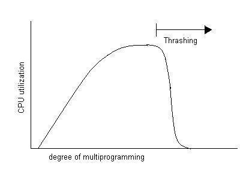
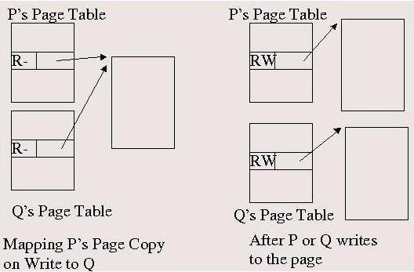

Page Replacement Algorithms, Swapping, and Some Other Issues in Memory
Management
Lecture-29
Operating Systems (CS330)
Lecturer: Deepak Gupta
Notes prepared by: Anoop Kumar
Lecture Date: October 11, 2004
Contents
In this lecture we will study another two approximate LRU page replacement
algorithms, namely the clock algorithm and two hand clock algorithm.
We will also study the concept of thrashing and the technique of swapping. We
will conclude the topic of memory management by discussing some other issues
related to memory management.
Back to Contents
Clock or Second chance algorithm (4.2 BSD)
The clock algorithm is similar to the FIFO page replacement algorithm
except that a page that has been recently used is given ``another chance''.
The list of physical memory frames is treated as a circular array, and a
``clock hand'' points to the frame following the one that was last replaced.
The clock hand scans the frames and clears the reference bit of a frame if it
is set, otherwise it reclaims the frame. Thus a frame for which the reference
bit is 1 is given another chance (to get referenced again) before being
reclaimed. If the page does not get referenced before the clock hand
completes the scan and reaches the same page again, it will be reclaimed this
time.
The 4.2BSD operating system used the clock algorithm for page replacement.
However, instead of evicting a page only when needed (during page fault
handling if there is no free frame), the implementation tries to always keep
the amount of free memory in the system above a certain threshold. A
kernel thread (a thread that always executes in the kernel mode)
called the pagedaemon process runs periodically reclaims pages that
have not been recently used in order to achieve this goal. The working of the
pagedaemon is based on the following three parameters.
- minfree
- the minimum tolerable amount of free memory.
- desfree
- the desirable amount of free memory.
- lotsfree
- threshold above which the pagedaemon process stops reclaiming pages.
The minfree, desfree, and lotsfree parameters are
generally set to 1/16th, 1/8th, and 1/4th
of the total memory size respectively.
The pagedaemon process is woken up periodically (4 times a second) or on a
page fault if the free memory size is less than desfree. A parameter
scanrate determines how fast the pagedaemon process should reclaim
pages. The value of scanrate is determined based on the current amount
of free memory: lower the amount of free memory, higher the scanrate.
The pagedaemon now runs the clock algorithm and scans frames at the computed
scanrate. When enough pages have been reclaimed (free memory is more
than lotsfree, the pagedaemon goes back to sleep).
Back to Contents
Two hand clock algorithm (4.3BSD)
The problem with the clock algorithm is that the time taken to scan all frames
(and thus the time given to a recently used page to be used again before it is
evicted) depends on the memory size. 4.3BSD introduced an enhancement of the
clock algorithm that does not have this problem. In this two hand clock
algorithm, there are two clock hands that are a fixed distance apart, and move
in sync. The front hand clears the reference bits while the back hand
reclaims the page if its reference bit is not set. Thus the time given to a
page to be referenced again before being evicted is the time taken by the back
hand to reach the page after the front hand has cleared its reference bit.
Since the separation between the two clock hands is fixed, this time does not
depend on the total memory size.
Back to Contents
Working Set and Thrashing
We now study the behavior of systems with demand paging under extreme loads
(in terms of memory requirements).
If the number of physical frames available to a process is not ``enough'', the
process page faults repeatedly. Such a process spends more time in waiting
for page faults to be processed than in actually computing, and is said to be
thrashing. The working set of a process is the set of pages
that the process is actively using at a given point in time, i.e., the pages
in the current locality of the process. Thus a process thrashes if it
cannot have its entire working set in memory.
Globally, if the available memory size is less than the sum of working set of
all processes, the system thrashes. In the thrashing state, the system spends
more time in servicing page faults than in actual computation; the CPU
utilization and throughput fall drastically.
The figure below shows how the CPU utilization varies with the degree of
multi-programming (number of processes). With only a few processes, the
physical memory is enough is accommodate the working sets of all processes and
hence very few page faults occur. Thus the CPU utilization increases as the
degree of multi-programming increases. As the number of processes increases,
a stage is reached when the memory is no longer sufficient to hold working
sets of all processes, thrashing occurs and therefore CPU utilization falls
steeply. At this stage, the system can only recover by reducing the number of
processes in memory.

Back to Contents
Swapping
As explained above, the degree of multi-programming must be reduced in order
to avoid or recover from thrashing. This obviously cannot be done by killing
processes. Instead, some processes can be swapped out, i.e., all
information pertaining to the process (including page tables and memory
resident virtual pages) that is not required while the process is running is
evicted from memory and written to the swap device. Since a swapped out
process cannot run (till it is swapped back in), it cannot compete for memory,
and hence the effective degree of multi-programming is reduced.
Note that swapping can be considered a form of scheduling that decides which
processes should be in memory at any given point in time. The difference from
CPU scheduling is that several processes can be in memory at the same time
while only one process can run on a CPU at any given time. The time scales
involved in this ``memory scheduling'' are typically an order of magnitude
larger than those involved in CPU scheduling (since swapping in and swapping
out of processes are much more expensive operations than a context switch).
Hence swapping is also sometimes called long-term scheduling, while CPU
scheduling is also called short-term scheduling.
There are several policy issues to be considered while implementing swapping.
When and which process(es) should be swapped out? When and which process(es)
should be swapped back in? Swapping should obviously ensure that there is
always enough free memory in the system so that thrashing does not occur. At
the same time, no process should be starved by keeping it swapped out for a
very long time. Thus, sometimes a process may have to be swapped in even
though enough memory is not available by swapping out some other process. Of
course, if this happens very frequently, the system will again thrash, though
in a different manner.
Swapping in BSD
In BSD, a kernel thread, called the swapper process handles swapping in
and swapping out of processes. The swapper process runs when there is not
enough free memory and it tries to swap out a process, or when a swapped
process has become runnable and it attempts to swap in the process. A swapped
out process is not swapped in till it is runnable. Since a sleeping process
cannot anyway use the memory allocated to it, it is better to let such a
process remain swapped out till it is runnable again. Similarly, as we will
see shortly, while selecting processes to swap out, processes that have been
sleeping for a long time are preferred since these processes are not likely to
become runnable in the near future.
Swapping In
When a swapped out process becomes runnable, the swapper process is woken up
and it tries to swap in the process. If there are several runnable, swapped
out processes, the most eligible one for swapping in is decided based on a
priority which depends upon:
-
the length of time the process has been swapped out,
-
the resident set size (number of physical frames allocated to the process) of
the process when it was swapped out,
-
the nice value of the process,
-
and the length of time for which the process was asleep.
Thus, for swapping in, higher preference is given to processes that have been
swapped out for longer, processes that require lesses physical memory,
processes with lower nice values, and processes that have been asleep for
longer. Note that while considering the memory requirements of a process, we
do not consider the total process size but just the amount of physical memory
that it is likely to require. This is estimated as the amount of physical
memory that was allocated to the process when it was swapped out.
After selecting a process to swap in, the swapper process checks whether there
is enough free memory to bring in the process. The process is swapped in even
if only half the required amount of memory is available if the process has
been swapped out for more than 10 seconds. If enough memory is not available,
some other process may be swapped out in order to free some memory, provided
that an in-memory process has been sleeping for at least 20 seconds, or the
process to be swapped in has been swapped out for at least 20 seconds. These
measures ensure that no process remains swapped out for very long. They also
ensure that processes do not get swapped in and out very frequently (which
would again cause thrashing).
Swapping Out
Some processes are swapped out when the long-term average of free memory
is less than desfree, or the short-term average of free memory is less
than minfree, or when a swapped out process has to be swapped in and
there is not enough free memory to swap it in (as described above).
The choice of the process to swap out depends on the following factors.
-
the length of time for which the process has been asleep
(processes that have been sleeping for longer are preferred more).
-
the resident size of the process (processes with larger resident sizes are
preferred more because swapping out these processes results in more memory
being freed up).
-
the time for which the process has been in memory (processes that have been in
memory longer are preferred over others in order to ensure fairness).
More precisely, the choice is made as follows.
If a process has been sleeping for at least 20 seconds, the process that has
been sleeping the longest is swapped out. Otherwise, a runnable or a recently
run process must be swapped out. In this case, first the four largest
processes in memory are selected. Out of these four, the one which has been
in memory the longest is swapped out. If necessary, more of these processes
may get swapped out.
Back to Contents
Prepaging
Prepaging refers to the idea of bringing in some pages into memory before a
new program starts executing. For example, the code page containing the
program entry point, and a stack page may be prepaged. Prepaging can also be
profitably used when swapping in a process - the resident set of the process
when it was swapped out can be prepaged before resuming the process.
Prepaging helps to improve the system performance by anticipating some page
faults and hence reduces the number of page faults.
Back to Contents
Copy on Write
Recall the copy on write mechanism from an earlier lecture. Copy on write is
a technique wherein a process can be efficiently given a copy of a page of
another process. Actual copying occurs when either process tries to write to
the page. Recollect that copy on write is very useful in the implementation
of the fork system call: the address space contents of the parent need
not actually be copied to the child. A page is copied only when either of the
processes writes to the page before any of the two processes has called
exec or has exited. We can now see precisely how copy on write can be
implemented.
If a page of a process P is to mapped copy on write to process Q, Q is made to
share the same physical frame but write permissions for this page are removed
for both P and Q, and the frame is marked copy-on-write. When either P or Q
tries to write to the page, a protection fault occurs. The protection fault
handler copies the page to a free frame and maps it to the address space of
the faulting process in place of the shared page (with write permission). If
the number of processes sharing the page copy-on-write drops to 1, the lone
process that has access to this page is also given the write permission. This
mechanism is illustrated in the figure below.

Back to Contents